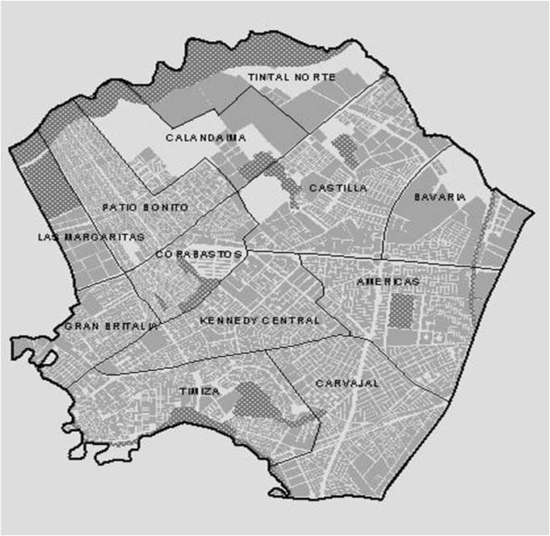

Cómo funciona la plataforma
Espacio para consultar y alertar a la comunidad sobre irregularidades en la ciudad.
Recuerde que para hacer efectivo un reporte/pin tiene que estar registrado. Puede hacerlo con el botón "Iniciar Sesión"
Categorías de Reportes Urbanos
- Tráfico y Movilidad: Semáforos dañados, choques y trancones.
- Fallas de Infraestructura: Postes sin luz, huecos y fugas de agua.
- Obras y Mantenimiento: Pavimentación y cierres programados.
- Aún no sé que poner: Próximamente
- Aún no sé que poner: Próximamente
- Aún no sé que poner: Próximamente
Mapa de Alertas en Tiempo Real

Registrar un Nuevo Problema
Resumen del Sistema
Cargando información del sistema